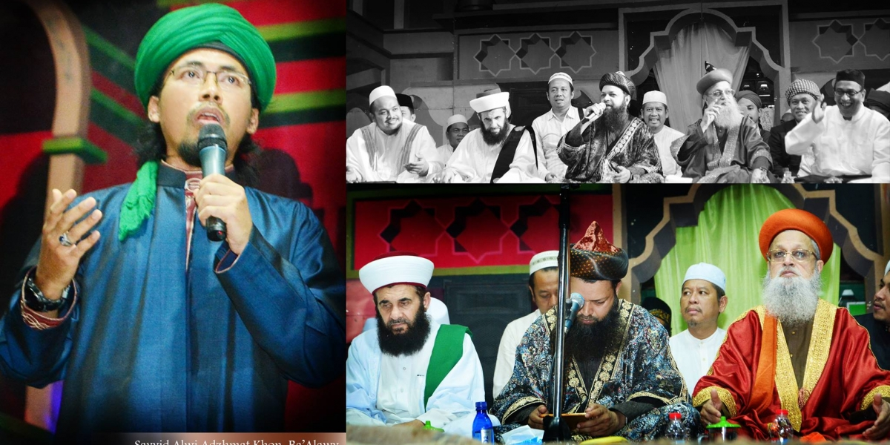

WASIAT SAYYIDINA UMAR

Bismillahirrahmanirrahim
Sayyidina Umar bin Khattab adalah khalifah kedua yang berkuasa pada tahun 634 M sampai 644 M. Beliau merupakan salah satu dari Khulafaur Rasyidin. Sayyidina Umar merupakan salah satu sahabat utama dari Nabi Muhammad SAW, yang juga merupakan ayah dari Sayyidah Hafshah, istri Nabi Muhammad SAW.
Dikisahkan bahwasanya beliau berwasiat,
قال عمر بن الخطاب رضي الله عنه : “عشرة لا تصلح بغير عشرة، لا يصلح العقل بغير ورع، ولا العمل بغير علم، ولا الفوز بغير خشية، ولا السلطان بغير عدل، ولا الحسب بغير أدب، ولا السرور بغير أمن، ولا الغنى بغير جود، ولا الفقر بغير قناعة، ولا الرفعة بغير تواضع، ولا الجهاد بغير توفيق”
“Sayyidina Umar bin Khattab RA berkata: Ada 10 hal yang tidak akan menjadi baik tanpa 10 hal yang lain, (yaitu) akal tanpa kehati-hatian, amal tanpa ilmu, keberhasilan tanpa rasa takut, pemimpin tanpa keadilan, kemuliaan tahta tanpa adab, kebahagiaan tanpa rasa aman, kekayaan tanpa kedermawanan, kemiskinan tanpa sifat qona’ah, ketinggian tanpa sikap tawadhu dan jihad tanpa taufiq.”
Berikut penjelasannya:
1. AKAL TANPA KEHATI-HATIAN
Contoh:
Ketika akan makan, hendaknya kita berhati-hati dengan mencari tahu asal muasal makanan tersebut. Dari mana uang untuk membelinya diperoleh, apakah halal, haram atau syubhat?
Rasulullah SAW bersabda:
“Akal adalah cahaya di dalam qolbu yang bisa memisahkan antara kebenaran dan kebatilan.”
Amir bin Qais pernah berkata:
“Jika akalmu menahan dirimu dari sesuatu yang tidak patut untuk dilaksanakan, maka akal itu sehat.”
2. AMAL TANPA ILMU
Rasulullah SAW bersabda:
“Sebaik-baiknya amal adalah mengenal Allah SWT. Sesungguhnya ilmu akan bermanfaat untukmu walapun kalian beramal banyak atapun sedikit, dan sesungguhnya kebodohan tidak bermanfaat bagimu, sekalipun kalian beramal banyak ataupun sedikit.”
3. KEBERHASILAN TANPA RASA TAKUT
Tidak akan bernilai, keberhasilan terhadap sesuatu tanpa adanya rasa takut kepada Allah SWT.
Contoh:
Berhasil dalam usaha tapi tidak punya rasa takut kepada Allah SWT. Maka boleh jadi keberhasilan itu akan digunakan untuk bermaksiat kepada Allah SWT.
4. PEMIMPIN TANPA KEADILAN
Para pemimpin atau penguasa tidak akan bernilai bagus dan tidak berarti apa-apa kekuasaannya tanpa adanya sifat adil.
Rasulullah SAW bersabda:
“Orang yang paling dicintai Allah SWT pada Hari Kiamat dan paling dekat dengan keridhaan Allah SWT adalah pemimpin yang adil. Dan manusia yang paling dibenci Allah SWT di Hari Kiamat dan paling jauh rahmatnya dari keridhaan Allah adalah pemimpin yang jahil dan semena-mena.”
5. KEMULIAAN TAHTA TANPA ADAB
Prestasi, pendidikan, kedudukan dan nasab yang tinggi tidak akan bernilai bagus tanpa adanya adab yang baik.
Nasab yang baik jika tidak ditopang dengan adab yang baik maka tidak akan mempercepat sampainya ia pada keridhaan Allah.
Rasulullah SAW bersabda:
“Siapa yang amalnya buruk (jelek perbuatannya dan tidak bagus akhlaknya) maka nasabnya yang mulia tidak akan mempercepatnya sampai kepada keridhaan Allah.”
Sebagian ulama ahli ma’rifat berkata:
Ilmu adalah kemuliaan yang tidak terkira nilainya. Sedangkan ‘adab yg baik’ adalah harta yang tidak akan pernah membuat pemiliknya merasa takut ketika memilikinya.
Semakin baik adabmu, maka engkau akan semakin tenang dan tentram.
6. KEGEMBIRAAN TANPA RASA AMAN
Kebahagiaan atau kesenangan tidak akan bernilai, serta tidak akan terasa indah tanpa adanya rasa aman dan ketentraman batin.
7. KEKAYAAN TANPA KEDERMAWANAN
Kedermawanan merupakan perhiasan bagi orang yang mempunyai banyak harta. Maka ketika kedermawanan itu tidak dimiliki oleh orang yang banyak harta, berarti ia tidak memiliki kepantasan untuk disebut sebagai orang yang kaya.
Rasulullah SAW bersabda:
“Orang yang pemurah itu dekat dengan Allah SWT, dekat dengan manusia, dekat dengan surga dan jauh dengan neraka. Sedangkan orang yang kikir jauh dari Allah, jauh dari manusia, jauh dari surga dan dekat dengan neraka.”
Orang bodoh yang dermawan lebih Allah sukai dibandingkan orang yang banyak ibadah tetapi pelit.
8. KEFAKIRAN TANPA RASA QANA’AH
Orang fakir yang tidak merasa cukup dengan pemberian Allah SWT maka ia tidak akan memiliki kemuliaan.
Rasulullah SAW bersabda:
“Jadilah engkau orang yang berhati-hati maka engkau akan menjadi manusia yang paling hebat ibadahnya. Dan jadilah orang yang qana’ah (merasa cukup dengan pemberian Allah SWT) maka engkau akan menjadi orang yang paling banyak bersyukur. Dan hendaknya, apa yang engkau berikan agar dimiliki oleh orang lain, adalah sesuatu hal yang engkau cintai ketika engkau memilikinya.”
Contoh :
Jika kita senang dengan pemberian yang banyak, maka hendaknya kita suka memberi dengan jumlah yang banyak pula.
Walaupun kita butuh, hendaknya kita menunjukkan sikap berkecukupan dan tidak mudah meminta-minta. Maka hal itu akan menjadikan kita lebih baik walau dalam keaadaan fakir.
9. KEMULIAAN NASAB TANPA SIKAP TAWADHU
Nasab (garis keturunan) yang mulia, tidak akan bernilai apa-apa tanpa adanya sikap rendah hati. Walaupun memiliki nasab yang mulia, hendaknya tetap patuh dengan hukum dan norma yang berlaku.
10. JIHAD TANPA TAUFIQ
Hal-hal yang disebut sebagai jihad, namun tanpa adanya kesesuaian dengan aturan Allah, maka tidak bisa disebut sebagai perjuangan yang bernilai dakwah. Sebagai contoh yaitu memprovokasi, memecah belah umat atau fanatik buta.
Rasulullah SAW bersabda:
“Sebaik-baiknya jihad adalah melawan hawa nafsu untuk menggapai keridhoan Allah SWT.”
Wallohu a’lam bisshawab
Ahbaburrosul Indonesia 2021